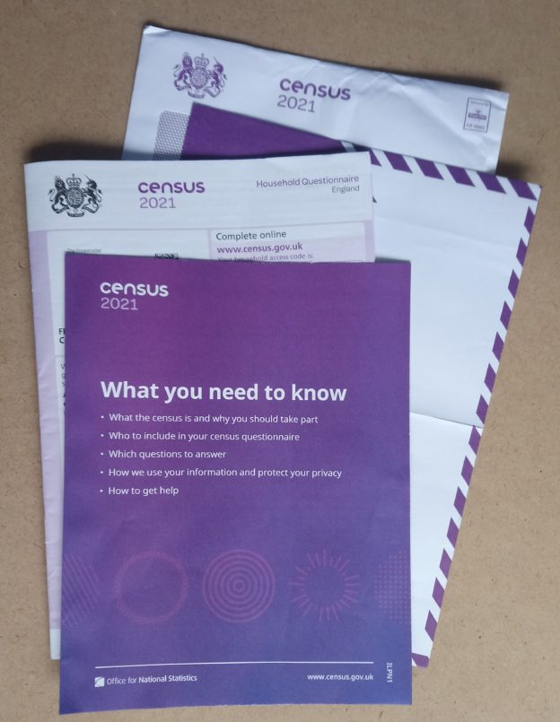

Census 2021: Who gets a letter and who gets a paper form?
This is an extended article, which was originally posted on The Conversation on 18/03/2021.
In England, Wales and Northern Ireland, we should all now have received either a letter with a 16 digit code or a paper form to fill in for the 2021 Census. There are lots of great reasons why we should respond to the census, aside from it being a legal requirement. Among other things, it’s a good way to help provide an accurate snapshot of your community, which means people will get the services they needs at a local level. The Conversation and the Royal Geographical Society (with IBG) have both posted more information about what the census is and why it is important.
The census is a fascinating data set that’s vital to many areas of research and government decision making. It provides us with a count of the population, but also a wide range of demographic data like age, gender, family relationships, socio-economic information, ethno-cultural background, health, and some voluntary questions, including religious identity and sexuality.
This is the first census that most people will be asked to complete online. However, some have received paper forms through the post, while others have just received a letter asking them to fill in the census online. Though the mechanics of the census may appear complex, the reasons why are actually quite straightforward.
So who gets a letter, who gets a form and why? The Office for National Statistics (ONS) (which is coordinating the census) has tried to determine who gets what by assessing which households are likely to find it impossible or more difficult to respond to the census online. These households (around 10% of all households) have been sent a paper form. Everyone else has received a letter with a code, asking them to complete the form online (however, it’s important to note that if you received a form, you can still respond online and if you got a letter, you can request a paper form if you want).
Online or by post?
There are a number of good reasons for filling out your form online – it saves the ONS time and money when collating the results and means we can get more accurate data.

You might be thinking: “what about my Aunt Muriel who received a letter? She doesn’t use the internet, why hasn’t she got a form?” This is because the ONS doesn’t know who’s able and willing to submit the form online – they can only model this based on the data they have.
As statistician George Box said: “All models are wrong, but some are useful”. This means that while the ONS has modelled who will (and who will not) respond online, even if they get 95% of people in the right group, there will be some errors.
There’s a term for this in the field of Geographical Information Systems (often shortened to GIS, the systems and tools we use to manage and analyse location data) – an ecological fallacy. This means that there will be cases which contradict the ONS’s model. For those who the ONS has deemed unable or unwilling to complete the census form online, there will be some who don’t fit this criteria and vice versa. This is why the ONS has included a code on the forms. If you know someone who needs a form, but is having problems requesting one, you can request one on their behalf.
The hard to count index
How did the ONS model this information? The ONS created a “hard to count” index to measure who might not respond to the census (also used for the 2001 and 2011 censuses). However, the 2021 census is different as this is the first time it’s tried to do a census “online first”, which means the ONS also had to include the digitally excluded into its index.
The key data used to drive this was internet access data from Ofcom, mobile internet connectivity (also from Ofcom) and information on who has already interacted with government websites (such as via the DVLA and HMRC). This data was used to create an area-based model, with each area assessed as either being able to complete the census online, or needing paper forms. Each area contains about 1,500 people and are known by the ONS as LSOAs (lower layer super output areas). This was tested and refined together with many other aspects of the census in the ONS’s big rehearsal for the census in 2019. There are lots more details in their report EAP102 Hard to Count index for the 2021 Census.
Internet User Classification
While ONS have not published their Hard to Count index, they have shared it with Local Authorities to help them target their census engagement work. A similar example looking at who is digitally excluded is the Internet User Classification, created by the Consumer Data Research Centre, open and freely available for anyone to use. Here, they looked at a range of factors (including internet connectivity and usage) and created a geodemographic classification identifying who uses the internet (e.g. e-Cultural Creators, e-Professionals) and who does not (e.g. Settled Offline Communities and e-Withdrawn). Geodemographics have some advantages over indices, in that they can help describe who doesn’t have internet access, and can be used to identify specific measures to help address this and/or used to identify individuals or groups with specific characteristics.
However, we need to remember our ecological fallacy from earlier – not everyone in “e-Cultural Creators” (the group with the highest level of internet access/use) will have access to the internet and not everyone in “e-Withdrawn” (the group with the lowest level of internet access/use) will not have access to the internet. It is a model – a useful model, but a model nonetheless. If you are interested in Geodemographics, CDRC have a training course on Geodemographics, what they are and how you can create them (free to access, but you need to sign up for an account).
One other thing to consider is what if the model is wrong? No model is 100% correct, so there will always be people who are incorrectly allocated to one group or another. When using the model, this needs to be remembered, and the suitable infrastructure needs to be in place to support this (i.e. being able to request a paper form if you want one). How much resource this should be given is a tricky question – and one that varies depending on the impact of getting someone in the wrong group.
Hopefully this helps explain the why question. There are many more details on the ONS website, particularly in their papers documenting the methods used to run the Census at https://uksa.statisticsauthority.gov.uk/about-the-authority/committees/methodological-assurance-review-panel-census/papers/, particularly the “hard to count” (EAP102) and “maximising response” (EAP113) papers. Thanks very much to David Martin (University of Southampton) for pointing me to the resources in question, Tom Chadwin for his suggestions improving this article, and Kuba Shand-Baptise at The Conversation for her comments and input. If you are interested in GIS and the Ecological Fallacy, I can recommend GIS: Research Methods (first chapter free online).
This is an extended article, which was originally posted on The Conversation on 18/03/2021.